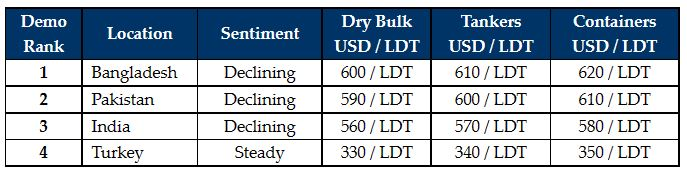

inWeekly Demolition Reports22/11/2021

The recent noteworthy drop in the Indian ship recycling market seems to have reverberated across the sub-continent recycling sector this week, as competing markets start to reverse their vessel offerings in near unison.
Bangladesh has remained largely quiet for much of the week as they observe the ongoing price reductions, whilst local Recyclers expect further falls ahead.
Indian steel plate prices have declined by nearly USD 45/LDT over recent weeks, leaving Alang Buyers rather spooked and fearful to maintain previous offers, or even consider offering on any fresh units. Yet, as the week drew to an end, there were signs of a slight rebound on steel prices and sentiment.
Of course, it may still take a couple of weeks of stability before end Buyers return to the bidding tables once again. Notwithstanding, the market appears to have peaked at these exceptional numbers above USD 600/LDT and end Buyers are struggling to reconcile themselves with fresh purchases at these impressive levels.
Many expect a weaker market going into 2022, but the industry overall has been surprised by the continued performance of the market through the course of the year, as prices have surged above and beyond all expectations, having more than doubled from a low of almost USD 250/LDT through the halfway point of 2020.
Pakistan remains stranded on the sidelines, watching market developments in both India and Bangladesh, hoping to get hold of a bargain or two, even though the supply of vessels for recycling remains remarkably sparse.
On the Turkish end of things, despite demand remaining firm, the dearth of supply has kept local yards increasingly eager for tonnage, while the Lira breaks even more records against the U.S. Dollar.
For week 48 of 2021, GMS demo rankings / pricing for the week are as below.

Download PDFSource: GMS,Inc.